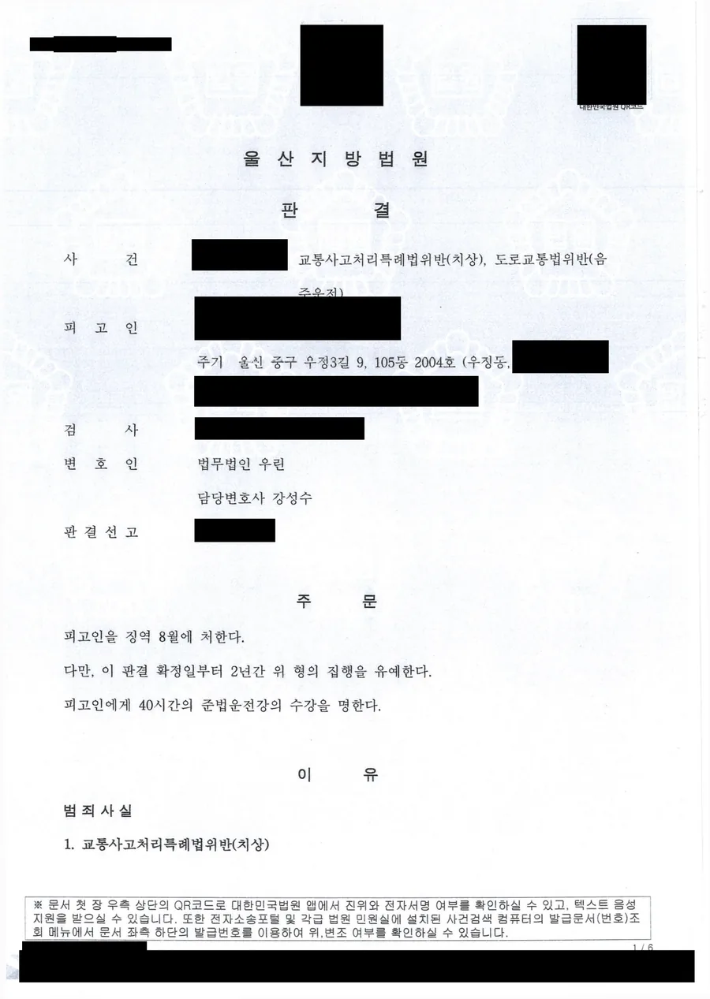
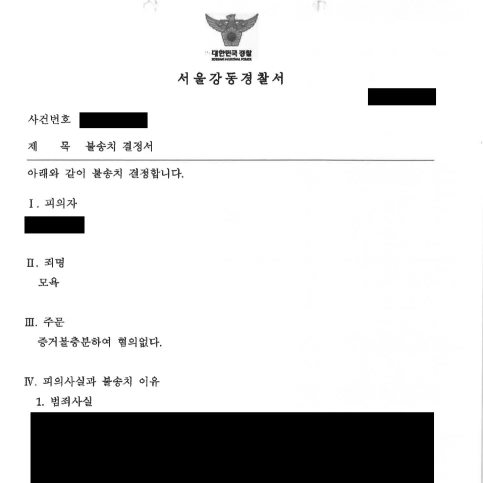
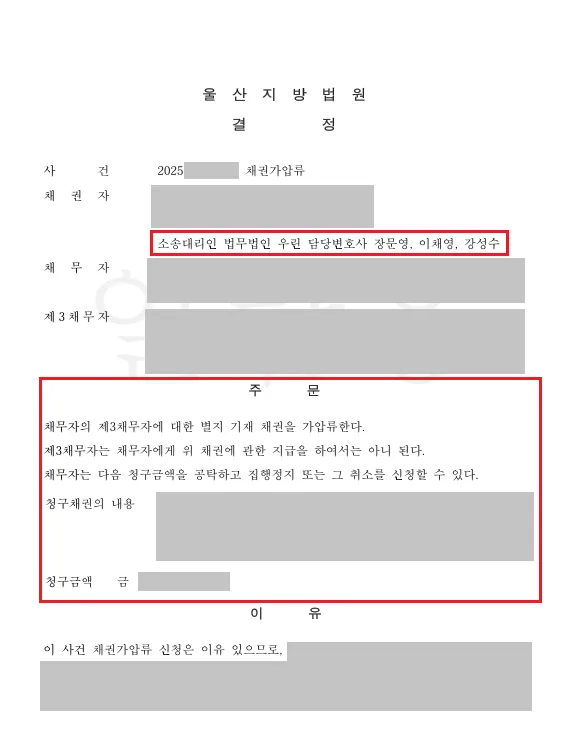

집행유예음주운전
형사·민사 사건에서 의뢰인들이 자주 묻는 질문을 분야별로 정리했습니다. 키워드로 검색하거나 분야를 선택해 보세요.
강성수 변호사가 직접 이끌어낸 실제 사건 결과입니다.

집행유예
불송치 병합심리
병합심리
가압류 집행유예
집행유예 집행유예
집행유예 집행유예
집행유예 집행유예
집행유예전체 61개 칼럼
판결문은 회수의 시작입니다. 실제로 돈을 받는 절차를 순서대로 정리했습니다.
칼럼 읽기민사에서 증거로 쓰이는 것과 형사 문제가 되지 않는 것은 다릅니다. 선을 정리했습니다.
칼럼 읽기구속 여부는 하루 만에 결정됩니다. 그 하루에 무엇을 준비하느냐가 전부입니다.
칼럼 읽기혈중알코올농도 0.059%, 피해자 16주 진단, 구속 상태에서 시작한 사건에서 징역 8월 집행유예 2년을 받아 일상으로 돌아간 사례입니다.
칼럼 읽기재판까지 가지 않고 끝나는 길이 있습니다. 다만 조건을 지켜야 유지됩니다.
칼럼 읽기직접 연락하는 순간 합의는 어려워집니다. 합의의 시점과 방법을 정리했습니다.
칼럼 읽기안전이 먼저입니다. 이혼 절차보다 앞서 사용할 수 있는 보호 수단을 정리했습니다.
칼럼 읽기공사대금 분쟁은 대부분 하자 주장과 함께 옵니다. 무엇을 먼저 정리해야 하는지 짚었습니다.
칼럼 읽기3년이라는 기간은 알고 나면 짧습니다. 시효가 언제부터 시작되는지 정확히 알아야 합니다.
칼럼 읽기이혼 소송 중에 재산이 사라지면 판결은 의미가 없습니다. 막는 방법과 순서를 정리했습니다.
칼럼 읽기형사 사건이 끝나기를 기다리면 구제 기한을 놓칩니다. 면허 절차는 따로 움직입니다.
칼럼 읽기지운 파일은 대부분 복원됩니다. 삭제보다 위험한 것은 삭제했다는 사실 자체입니다.
칼럼 읽기부동산과 예금만 나누는 것이 아닙니다. 실무에서 가장 많이 빠뜨리는 퇴직금과 연금을 정리했습니다.
칼럼 읽기보증금을 받기 전에 짐부터 빼면 순위를 잃습니다. 임차권등기명령이 왜 먼저인지 정리했습니다.
칼럼 읽기소장을 받고 무시하면 그대로 확정됩니다. 감액이 인정되는 사정과 답변서 작성 방향을 정리했습니다.
칼럼 읽기빨리 끝내려다 더 오래 걸리는 경우가 많습니다. 두 절차의 차이와 선택 기준을 정리했습니다.
칼럼 읽기검사 결과가 음성이어도 기소되는 경우가 있습니다. 마약 사건에서 실제로 무엇이 증거가 되는지 정리했습니다.
칼럼 읽기교사, 의료인, 체육지도자라면 형량보다 취업제한이 더 큰 문제입니다. 면제를 받으려면 재판 중에 다퉈야 합니다.
칼럼 읽기위자료는 재산분할과 전혀 다른 제도입니다. 파탄의 책임을 어떤 자료로 보여줘야 하는지 정리했습니다.
칼럼 읽기소송에서 이기고도 돈을 못 받는 이유는 대부분 순서 때문입니다. 가압류를 언제 해야 하는지 정리했습니다.
칼럼 읽기청구액이 곧 인용액은 아닙니다. 상간자 위자료가 실제로 어떤 요소로 조정되는지 정리했습니다.
칼럼 읽기양육비는 감정으로 정하는 금액이 아닙니다. 기준표가 어떻게 작동하는지와, 받지 못할 때 쓸 수 있는 절차를 정리했습니다.
칼럼 읽기음주운전은 수치 한 자리 차이로 결과가 크게 달라집니다. 구간별 처벌과 행정처분, 그리고 적발 직후 해야 할 일을 정리했습니다.
칼럼 읽기성범죄 사건에서 형량만 보면 안 됩니다. 신상정보 등록과 공개명령은 생활을 바꾸는 처분이며, 재판 중에 다퉈야 합니다.
칼럼 읽기돈을 더 버는 쪽이 양육권을 가져가는 것이 아닙니다. 법원이 실제로 확인하는 기준과 미리 준비해야 할 자료를 정리했습니다.
칼럼 읽기차용증이 없다는 이유로 포기할 필요는 없습니다. 계좌이체 내역과 대화만으로 대여금을 인정받는 방법과 절차 선택 기준을 정리했습니다.
칼럼 읽기상간자 소송은 결정적 장면이 없어도 가능합니다. 어떤 자료가 부정행위로 평가되는지, 반대로 모으면 안 되는 자료는 무엇인지 정리했습니다.
칼럼 읽기전업주부라서 재산분할을 못 받는 것이 아닙니다. 법원이 기여도를 어떻게 계산하는지, 무엇을 자료로 남겨야 하는지 정리했습니다.
칼럼 읽기억울한 성폭행 혐의에서는 말뿐인 해명보다 사건 전후의 객관적 정황 증거가 중요합니다. CCTV, 메시지, 통화기록, 증거 제출 순서를 정리했습니다.
칼럼 읽기가족이 갑자기 구속되면 일반 면회 예약보다 먼저 사건 방향을 잡아야 합니다. 일반 접견과 변호인 접견의 차이, 구속 초기 대응 순서를 정리했습니다.
칼럼 읽기경찰 출석 요구를 받았다고 해서 모든 사건에 변호사 선임이 필요한 것은 아닙니다. 다만 성범죄, 사기·횡령·배임, 구속 위험 사건은 첫 조사 전 상담이 매우 중요합니다.
칼럼 읽기회사 자금, 모임 회비, 법인카드 사용 문제로 횡령·배임 혐의를 받는 경우 핵심은 감정적인 억울함이 아니라 자금 흐름과 고의성 부재를 객관 자료로 설명하는 것입니다.
칼럼 읽기경찰 조사를 혼자 받은 뒤 변호사를 찾으면 이미 불리한 조서가 만들어져 있을 수 있습니다. 조사 전 준비해야 할 핵심 대응을 정리했습니다.
칼럼 읽기마약 사건은 초범이라도 방심하면 안 됩니다. 법원이 중요하게 보는 재범 위험성과 치료·재활 중심 선처자료를 정리했습니다.
칼럼 읽기성범죄 사건에서 거짓말탐지기 조사를 제안받았을 때 무조건 응해야 하는지, 검사 결과가 어떤 의미를 갖는지 정리한 칼럼입니다.
칼럼 읽기형사재판에서 정신감정이 책임능력과 양형에 어떤 영향을 줄 수 있는지, 언제 신청해야 하고 어떤 자료가 필요한지 정리한 칼럼입니다.
칼럼 읽기성범죄 무고를 주장하는 사건에서 카톡이 지워졌거나 녹음이 없는 경우, CCTV와 주변 자료를 사라지기 전에 확보하는 초기 대응이 중요합니다.
칼럼 읽기랜덤채팅이나 SNS에서 미성년자에게 조건을 제안했다는 이유로 아청법 위반 조사를 받게 된 경우, 실제 만남이 없었더라도 문제될 수 있는 쟁점과 초기 대응 방법을 정리했습니다.
칼럼 읽기축제나 모임 후 음주운전으로 적발된 경우, 실형 위험을 줄이기 위해 초기에 확인해야 할 감형 요소를 정리했습니다.
칼럼 읽기병원 이용 후 남긴 온라인 리뷰로 모욕죄 고소를 당한 사건에서, 경찰 단계에서 혐의 없음 불송치 결정을 받은 사례입니다.
칼럼 읽기두 지역 법원에서 따로 진행되던 형사재판을 대법원 병합심리 결정으로 하나의 재판으로 합친 사례입니다.
칼럼 읽기상대방 명의 부동산이 없어 막막했던 채권 회수 사건에서, 임대차보증금 반환채권을 신속히 가압류해 돈을 받을 기반을 마련한 사례입니다.
칼럼 읽기음주운전 집행유예 기간 중 무면허 상태로 사고를 내 상해까지 발생한 사건에서, 실형 위험을 방어하고 벌금형으로 마무리한 사례입니다.
칼럼 읽기불법 게임장 운영과 현금 환전, 장기간 범행이 문제 된 사건에서 재범 방지 자료와 양형자료를 정리해 집행유예를 이끌어낸 사례입니다.
칼럼 읽기지인의 부탁으로 선불 유심폰을 넘겨 전기통신사업법위반 방조 혐의를 받은 사건에서, 가담 정도와 교화 가능성을 정리해 집행유예를 이끌어낸 사례입니다.
칼럼 읽기집행유예 기간 중 20회가 넘는 사기·컴퓨터등사용사기 혐의가 문제 된 사건에서, 경합범 법리와 피해 회복 전략으로 다시 집행유예를 이끌어낸 사례입니다.
칼럼 읽기마약 재판을 받던 중 다시 마약을 해 구속된 사건에서, 변화 가능성과 치료 의지를 입증해 집행유예를 이끌어낸 사례입니다.
칼럼 읽기임신 중 부정행위와 애정표현 문자라는 불리한 증거가 있었지만, 위자료 감액 사유를 정리해 4,000만 원 청구를 1,000만 원으로 줄인 사례입니다.
칼럼 읽기민사소송 1심에서 패소한 사건을 항소심에서 사실관계와 법리를 다시 구성해 청구금액 약 80% 인정이라는 결과로 뒤집은 사례입니다.
칼럼 읽기마약 투약 혐의로 재판을 받던 중 다시 마약을 해 구속된 사건에서, 치료 의지와 재범 방지 구조를 입증해 집행유예를 받은 사례입니다.
칼럼 읽기음주운전 전력 4회와 재판 중 재범이라는 최악의 조건에서 검찰 실형 구형을 넘고 벌금 400만 원을 이끌어낸 사례입니다.
칼럼 읽기음주운전 전과 3회와 실형 전력까지 있었던 음주측정거부 사건에서, 재범 방지 구조와 양형자료를 설계해 집행유예를 이끌어낸 사례입니다.
칼럼 읽기사기 혐의를 계속 부인하다 실형 위험이 커진 사건에서, 증거 구조를 분석하고 피해 회복과 합의를 진행해 집행유예로 마무리한 사례입니다.
칼럼 읽기가짜 전세계약서를 이용한 대출사기 사건에서 사기, 사문서위조, 위조사문서행사 혐의가 함께 적용되었지만 집행유예를 이끌어낸 사례입니다.
칼럼 읽기군 복무 중 외출증 위조와 다수 피해자에 대한 가혹행위가 문제 된 사건에서, 피해 회복 노력과 객관적 반성자료를 정리해 집행유예를 이끌어낸 사례입니다.
칼럼 읽기고소인이 항거불능을 주장하고 카카오톡 대화까지 삭제된 준강간 사건에서, CCTV와 동선 분석으로 불송치 결정을 이끌어낸 사례입니다.
칼럼 읽기경찰관과의 실랑이 중 물건이 얼굴에 맞아 특수공무집행방해 혐의를 받은 사건에서, 피해 회복과 진정성 있는 양형자료를 통해 벌금형으로 방어한 사례입니다.
칼럼 읽기초기 법률 판단을 누가 하느냐에 따라 대응 방향이 달라질 수 있습니다.
칼럼 읽기1심에서 벌금형이 나왔더라도 검찰이 항소하면 항소심 결과는 달라질 수 있습니다. 강제추행 항소심에서 실제로 중요한 쟁점과 대응 방향을 정리했습니다.
칼럼 읽기내용증명, 지급명령, 보증금 반환소송을 상황별로 나누어 설명합니다.
칼럼 읽기첫 조사 전 준비해야 할 자료, 진술 과정에서 주의할 점, 변호사 상담이 필요한 시점을 정리했습니다.
칼럼 읽기검색 결과가 없습니다. 다른 키워드로 검색하거나 분야를 바꿔보세요.